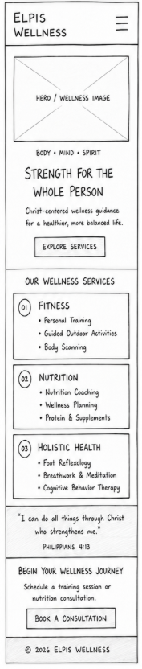
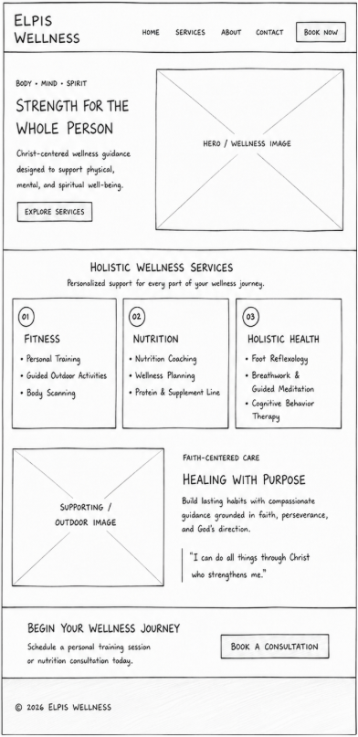

Elpis Wellness is a Christ-centered wellness company dedicated to helping individuals improve their physical, mental, and spiritual well-being. The name reflects the belief that true strength and healing come through faith, perseverance, and God's guidance.
The purpose of Elpis Wellness is to provide holistic wellness services that support the body, mind, and spirit. Visitors can explore fitness coaching, nutrition planning, and holistic health services designed to promote healing in a Christ-centered environment. The website will educate visitors about available programs and encourage them to take steps toward a healthier, more balanced life.
Used for headings, navigation, and accents. Represents growth, healing, and nature.
Used for buttons and call-to-action elements. Represents hope, strength, and divine guidance.
Used as the primary background color to create a warm and welcoming atmosphere.
Used for headings and navigation.
Used for body text and content.
Used for quotes and inspirational messages.

